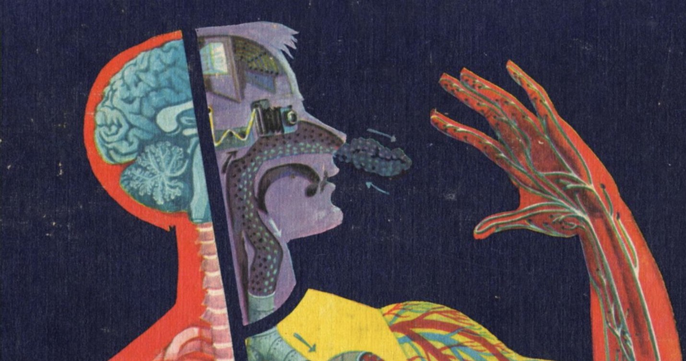

Outreach
Events and activities we organise for students, researchers and the wider community.
Events
2026
From Thought to Action

Human-centred neurotechnologies for communication, rehabilitation and inclusion.
A week at the University of Ferrara that brings neuroscience, AI and human-centred design together: a CoLab on who these technologies are for, followed by a Hackathon on technical challenges.
Our challenge: how early can a choice be decoded from EEG and EMG recorded under different levels of effort and uncertainty?